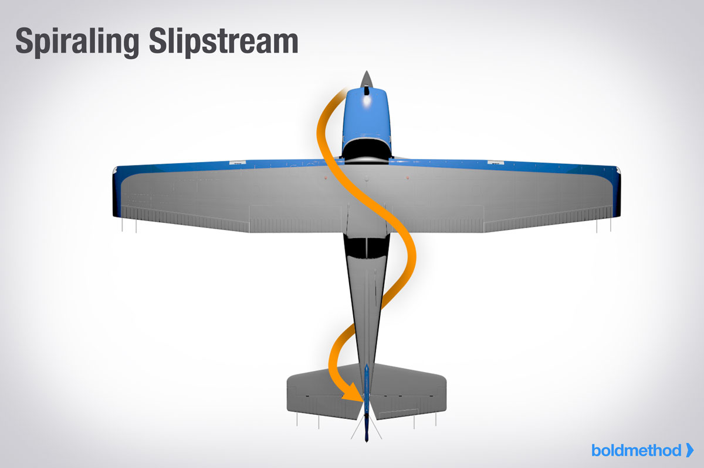

Torque and P-Factor To the pilot, “torque” (the left turning tendency of the airplane) is made up of four elements that cause or produce a twisting or rotating motion around at least one of the airplane’s three axes. These four elements are:

2. Corkscrewing effect of the slipstream
The high-speed rotation of an aircraft propeller gives a
corkscrew or spiraling rotation to the slipstream. At high
propeller speeds and low forward speed (as in the takeoffs
and approaches to power-on stalls), this spiraling rotation
is very compact and exerts a strong sideward force on the
aircraft’s vertical tail surface.